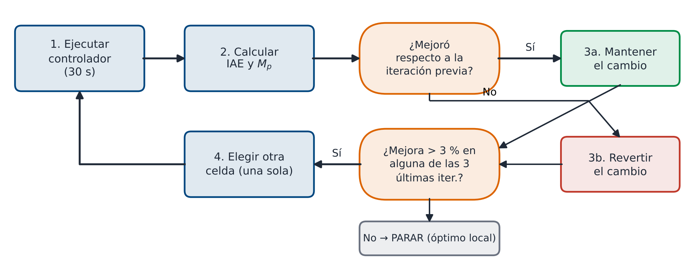
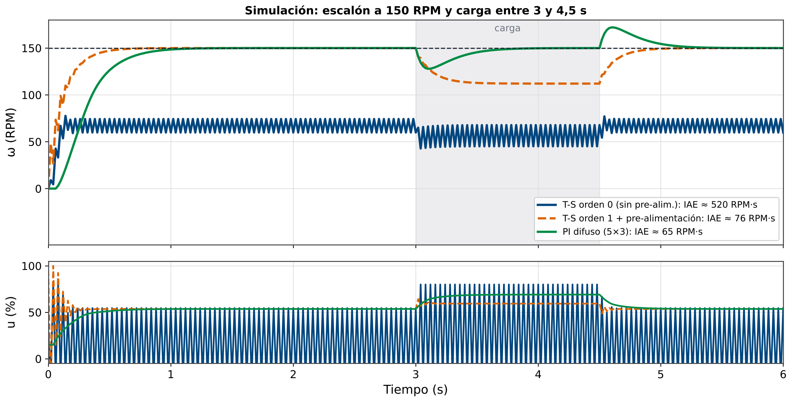
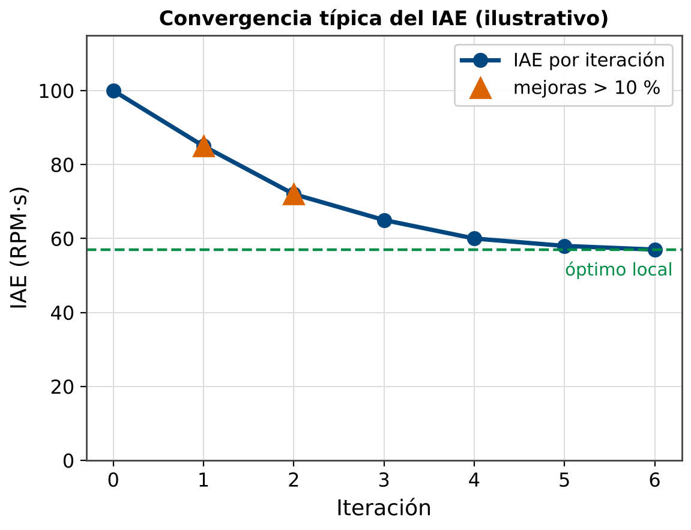

Cambiar solo una celda por iteración. Cambiar múltiples celdas a la vez hace imposible saber cuál fue la que mejoró o empeoró.
/**
* Tabla de reglas modifiable en tiempo real via Serial
* Formato de comando: "Tij=V"
* i = fila (0..4: NB..PB)
* j = columna (0..4: NN..PP)
* V = nuevo valor en % (entero con signo)
* Ejemplo: "T23=-30" -> fila 2 (ZO), col 3 (PS) = -30%
*/
// Tabla modificable en SRAM (no PROGMEM para poder cambiarla)
// Tabla del PI difuso (Delta_u %/paso): comando "Pij=V", j = 0..2
float PI_TABLE[5][3] = {
{-5, -5, -2.5}, {-5, -2.5, 0}, {-2.5, 0, 2.5}, {0, 2.5, 5}, {2.5, 5, 5}
};
int8_t TS_TABLE[5][5] = {
{-100, -80, -60, -30, -10}, // NB
{ -80, -60, -30, -10, 20}, // NS
{ -20, -10, 0, 10, 20}, // ZO
{ -20, 10, 30, 60, 80}, // PS
{ 10, 30, 60, 80, 100}, // PB
};
// Procesar comando de modificacion de tabla
bool parse_table_cmd(const String& cmd) {
// Formato esperado: "Tij=V"
if (cmd.length() < 5 || cmd[0] != 'T') return false;
int i = cmd[1] - '0';
int j = cmd[2] - '0';
int val = cmd.substring(4).toInt();
if (i < 0 || i > 4 || j < 0 || j > 4) return false;
if (val < -100 || val > 100) return false;
TS_TABLE[i][j] = (int8_t)val;
Serial.print(F("Tabla["));
Serial.print(i); Serial.print(F("]["));
Serial.print(j); Serial.print(F("] = "));
Serial.println(val);
return true;
}// Imprimir tabla actual con formato legible
void print_table() {
const char* E_NAMES[] = {"NB","NS","ZO","PS","PB"};
const char* DE_NAMES[] = {"NN","NS","ZO","PS","PP"};
Serial.println(F("\n=== TABLA T-S ACTUAL ==="));
Serial.print(F("e\\de\t"));
for (uint8_t j = 0; j < 5; j++) {
Serial.print(DE_NAMES[j]); Serial.print('\t');
}
Serial.println();
for (uint8_t i = 0; i < 5; i++) {
Serial.print(E_NAMES[i]); Serial.print('\t');
for (uint8_t j = 0; j < 5; j++) {
Serial.print(TS_TABLE[i][j]); Serial.print('\t');
}
Serial.println();
}
Serial.println(F("========================"));
}
// En el loop(): interpretar comandos Serial
// Comandos:
// 'p' -> imprimir metricas IAE/ISE/ITAE
// 'r' -> reset metricas
// 't' -> imprimir tabla actual
// 'Tij=V' -> modificar celda [i][j] = V
// '+' -> setpoint +25 RPM
// '-' -> setpoint -25 RPMEjecutar → 't' ver tabla → 'p' ver IAE → 'T23=-20' cambiar celda → 'r' reset → repetir.
| It. | Cambio | Celda | Antes | Después | IAE | $M_p$ (%) | Decidir |
|---|---|---|---|---|---|---|---|
| 0 | Tabla inicial | – | – | – | _______ | _______ | Base |
| 1 | |||||||
| 2 | |||||||
| 3 | |||||||
| 4 | |||||||
| 5 |
Describir brevemente: "Reduce ZO-PS de +10 a 0" o "Sube NB-ZO de -60 a -50"

Sin ESE ni sobreimpulso; ante la carga cae ≈22 RPM y vuelve a 150 RPM. El T-S-1 con pre-alimentación queda a 112 RPM con carga.
Se queda en ≈60 RPM y oscila (zona muerta + ZO-ZO = 0): el punto de partida antes de sintonizar.
| Métrica | T-S Ord. 0 | T-S Ord. 1 | PI Difuso |
|---|---|---|---|
| $t_r$ – Tiempo de subida (ms) | _______ | _______ | _______ |
| $M_p$ – Sobreimpulso (%) | _______ | _______ | _______ |
| $t_s$ – Tiempo establecimiento (ms) | _______ | _______ | _______ |
| $e_{ss}$ – Error estacionario (RPM) | _______ | _______ | _______ |
| IAE (RPM·s) | _______ | _______ | _______ |
| ISE (RPM²·s) | _______ | _______ | _______ |
| $\Delta\omega_{min}$ – Caída ante carga (RPM) | _______ | _______ | _______ |
| $t_{rec}$ – Tiempo recuperación (ms) | _______ | _______ | _______ |
| Iteraciones de sintonización | _______ | _______ | _______ |
't' por Serial: verificar que imprime la tabla'T22=5': verificar que la celda ZO-ZO cambia a 5'T22=0': restaurar ZO-ZO = 0't' en el CSV| Problema observado | Región activa | Acción correctiva |
|---|---|---|
| Sobreimpulso alto | $e$ peq.+, $\dot{e}$ neg. | Reducir celdas PS-NS, PS-NN, ZO-NS |
| Respuesta lenta | $e$ grande, $\dot{e}$ aprox. cero | Aumentar celdas NB-ZO, PB-ZO (valor absoluto) |
| Oscilaciones lentas | ZO-PP, ZO-NN activas | Reducir celdas ZO-NN y ZO-PP |
| Error estacionario + | ZO-ZO activa | En PI: ZO-ZO = 0 y ZO sin núcleo plano (si no, la integral se detiene dentro del núcleo) |
| Mal rechazo de carga | PS-PS, PS-PP activas (la carga frena: $e\uparrow$, $\dot e>0$) | Aumentar celdas PS-PS y PS-PP |

Si 3 iteraciones consecutivas no mejoran el IAE en más del 3%, el algoritmo ha convergido al óptimo local. Documentar la tabla final.
PID Híbrido y Gain Scheduling.
Combinar lo mejor de PID clásico y control difuso: parámetros ajustados por un sistema difuso.
imagenes/generar_imagenes.py; las respuestas son simulaciones con el modelo de motor de _comun/motor.py.Motor DC con T-S orden 0 (+ pre-alimentación). Setpoint 150 RPM. IAE base = 100 RPM·s, $M_p$ = 25% (valores ilustrativos).
Problema: sobreimpulso alto al arrancar.
Diagnóstico: el sobreimpulso ocurre cuando $e$ es pequeño positivo y $\dot{e}$ es negativo (motor frenando cerca del setpoint).
Acción: reducir celda PS-NS de +10 a 0 (menos potencia al acercarse al setpoint).
Comando: T31=0
Resultado: IAE = 85 RPM·s (mejora 15%), $M_p$ = 18% (mejora).
Decisión: MANTENER ✓
Acción: reducir celda ZO-NS de −10 a −20.
Comando: T21=-20
Resultado: IAE = 88 RPM·s (empeora 3%), $M_p$ = 20% (empeora).
Decisión: REVERTIR (restaurar T21=-10)
Acción: aumentar celda PB-ZO de +60 a +70 (más agresivo en el arranque, donde $e=+150$ RPM es PB).
Comando: T42=70
Resultado: IAE = 72 RPM·s (mejora 15%), $t_r$ reducida.
Decisión: MANTENER ✓